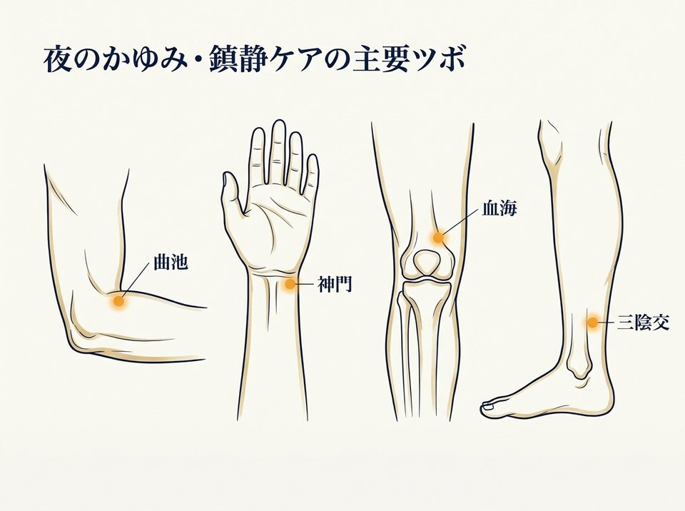

グルタミン酸ナトリウム症候群の鍼灸
食後15〜30分ほどで皮膚の潮紅・発汗・頭痛・しびれ等が一過性に現れる状態です。重篤な呼吸症状は救急受診を優先し、自律神経を整えます。


院長YouTube解説・関連動画
原因がグルタミン酸ナトリウムの摂取と断定することはできない
現在では、グルタミン酸ナトリウム症候群の原因がグルタミン酸ナトリウムを摂取することであると断定することはできません。
ある研究で、グルタミン酸ナトリウム症候群になったことがある人に対して、グルタミン酸ナトリウムが大量に含まれる食事を与えた研究があります。
その研究では、症状が再現されなかったため、グルタミン酸ナトリウムとグルタミン酸ナトリウム症候群の関係は証明できていません。
その後の研究でも、通常の料理に使うグルタミン酸ナトリウムの量では、人間に対しての毒性があるという確認はできていません。
現在では、胸焼けやふらつき、顔や肩のこわばり、胸痛などの症状は、グルタミン酸ナトリウムの摂取だけが原因で起きたのではないということが証明されています。
また、口から摂取したグルタミン酸ナトリウムは小腸で吸収された後、たんぱく質になるために腎臓や肝臓にとどまるため、全身にまわる血管や脳に入ることはな胃ことからも症状とグルタミン酸ナトリウムの関係はわかっていません。
グルタミン酸の過剰摂取： MSGはグルタミン酸の塩であり、グルタミン酸は神経伝達物質として働きます。MSGの過剰摂取が神経系に過剰な刺激を与え、症状を引き起こす可能性があります。
ヒスタミン反応： MSGは体内のヒスタミン放出を増加させる可能性があり、これが症状の一部を引き起こす可能性があります。
感受性： 個々の体質や遺伝的な感受性がMSG症候群の発生に関与している可能性があります。一部の人々は、MSGに対して特に敏感である可能性があり、その結果、他の人々よりも症状が出やすくなります。
プラシーボ効果： 一部の科学者は、MSG症候群の症状は、人々がMSGに対する悪影響を期待することによるプラシーボ効果である可能性があると示唆しています。つまり、人々はMSGを摂取すると症状が現れると予期し、その結果、体がそのように反応する。
▼ 詳しく知りたい項目だけタップして開けます（全項目の医学解説を収録）
01. 原因とメカニズム
なぜ症状が起きるのか・鍼灸の作用機序を読む
▼
01. 原因とメカニズム
なぜ症状が起きるのか・鍼灸の作用機序を読む
グルタミン酸ナトリウム症候群は中華料理店症候群とも呼ばれ、食後15〜30分ほどで頭痛、発汗、皮膚の潮紅、しびれ、口や喉のヒリヒリ感などが現れ、通常は2〜3時間で落ち着きます。かつてグルタミン酸ナトリウム（MSG）の摂取が原因とされましたが、科学的には単独の原因と断定されておらず、塩分や香辛料、個人の過敏性、体調や自律神経の乱れなど複合的要因が関与すると考えられています。呼吸困難や顔・喉の腫れがある場合は直ちに医療機関の受診が必要です。
なぜ鍼灸で改善へ向かうのか？（作用機序の図解）
グルタミン酸ナトリウム症候群に対する鍼灸は、神経性炎症・掻痒（かゆみ）伝達と自律神経の鎮静機序を通じて、お体本来の回復力を引き出します。
湿疹・傷口への直接刺激を避け、曲池・血海・築賓・三陰交など全身の調整穴へアプローチします。
痒み感覚を伝える神経経路の過敏性を鎮め、「かゆい→掻く→悪化」の悪循環を断ちます。
交感神経の過緊張や夜間覚醒を和らげ、皮膚の修復が進みやすい血流と睡眠環境を整えます。
標準の保湿・外用・内服治療と協調し、ストレスや季節変化で悪化しにくい土台を支えます。
02. よくあるお悩み
このような症状はありませんか？（4項目）
▼
02. よくあるお悩み
このような症状はありませんか？（4項目）
- ✓中華料理などの食事から15〜30分ほどで顔のほてりや皮膚の赤みが出る
- ✓食後に急な発汗や頭痛、だるさ、吐き気を感じることがある
- ✓口の中や喉のヒリヒリ感、顔や首まわりのしびれが2〜3時間続く
- ✓疲労やストレスが溜まっているときに食後の不調が出やすい
03. 当院の施術アプローチ
施術の進め方・改善のポイントを見る
▼
03. 当院の施術アプローチ
施術の進め方・改善のポイントを見る
04. ツボ詳細・セルフケア一覧
片頭痛・緊張型・群発・連日性頭痛のツボ図解（6穴）
▼
04. ツボ詳細・セルフケア一覧
片頭痛・緊張型・群発・連日性頭痛のツボ図解（6穴）
実際の施術ではお一人おひとりの体質・症状に合わせて選穴しますが、片頭痛・緊張型頭痛・群発頭痛・慢性連日性頭痛の予防・鎮静ケアの臨床でよく用いられる代表的なツボの目安です。
| ツボ名 | 位置の目安 | 主な狙い | セルフケアの注意点 |
|---|---|---|---|
| 百会（ひゃくえ） | 頭頂部の中央 | 頭全体の重だるさ・自律神経の過敏鎮静 | 突発的な激しい頭痛は直ちに脳神経外科を受診してください。 |
| 率谷（そっこく） | 耳の一番上から指2本分上の側頭部 | 片頭痛のズキズキ感・側頭筋の過緊張緩和 | 拍動性頭痛の発作中は強く揉まず静かに冷やすか遠隔穴を使います。 |
| 太陽（たいよう） | こめかみのくぼみ | こめかみの痛み・眼精疲労由来の頭痛ケア | 指の腹で優しく圧迫してゆっくり離します。 |
| 風池（ふうち） | 後頭部の生え際のくぼみ | 緊張型頭痛・後頭部痛・大後頭神経の緊張緩和 | デスクワークの合間の首ケアに非常に有効です。 |
| 合谷（ごうこく） | 手の甲、親指と人差し指の間 | 三叉神経領域の痛みを遠隔から鎮める国際標準穴 | 片頭痛の予兆を感じたときにも安全に押せます。 |
| 太衝（たいしょう） | 足の甲、親指と人差し指の骨の間 | ストレス・気圧変化・月経関連の頭痛予防サポート | 頭痛専門医の予防薬治療と並行して継続します。 |
05. 医学的根拠・国際査読論文（PubMed / Cochrane）
科学的エビデンス・出典リンク一覧（4件）
▼
05. 医学的根拠・国際査読論文（PubMed / Cochrane）
科学的エビデンス・出典リンク一覧（4件）
国際的な医学データベース（PubMed・Cochrane等）で報告されている片頭痛・緊張型頭痛・群発頭痛・慢性連日性頭痛の予防・鎮静ケア領域の代表的な査読済み鍼灸研究をまとめています（標準治療との併用や研究上の限界を含めて正確に掲載）。
| 年・研究デザイン | 対象・規模 | 主な結果 | 限界・出典 |
|---|---|---|---|
| 2023年 多施設3群RCT | 慢性特発性蕁麻疹 330名（3大学病院） | 4週時のUAS7変化量は真鍼-8.2 vs シャム-4.1 vs 待機-2.2と統計的有意差を確認。 | 最小臨床的重要差には未達・短期追跡。 Ann Intern Med (PMID: 37956431) |
| 2024年 メタ解析 | アトピー性皮膚炎 8 RCTs（n=463） | SCORAD（MD -10.61, p=0.004）、掻痒VAS（MD -14.71, p<0.00001）、DLQI（p<0.0001）が有意改善。 | EASI・IgEは有意差なし、大規模検証が課題。 BMJ Open (PMID: 39638592) |
| 2021年 シャム対照RCT | 軽〜中等症アトピー性皮膚炎 36名（韓国） | 4週時の総SCORAD変化は真鍼-11.83 vs シャム+0.45（P<0.0001）、終了4週後も持続。 | 単施設・小規模（重症例への外挿は慎重）。 BMC Complement Med Ther (PMID: 33926433) |
| 2023年 メタ解析 | 難治性掻痒（尿毒症性掻痒）7 RCTs（n=504） | 通常治療比で有効率RR 1.28（P=0.003）、透析併用でRR 1.42（P=0.0002）と有意に掻痒軽減。 | 透析患者対象のため一般皮膚疾患への外挿に留意。 J Pain Symptom Manage (PMID: 36055470) |
参考文献・出典
- 2023年 多施設3群RCT（慢性特発性蕁麻疹 330名（3大学病院））— Ann Intern Med (PMID: 37956431)
- 2024年 メタ解析（アトピー性皮膚炎 8 RCTs（n=463））— BMJ Open (PMID: 39638592)
- 2021年 シャム対照RCT（軽〜中等症アトピー性皮膚炎 36名（韓国））— BMC Complement Med Ther (PMID: 33926433)
- 2023年 メタ解析（難治性掻痒（尿毒症性掻痒）7 RCTs（n=504））— J Pain Symptom Manage (PMID: 36055470)
06. よくある質問（FAQ）
よくあるご質問を見る（2件）
▼
06. よくある質問（FAQ）
よくあるご質問を見る（2件）
Q. 食後に顔や喉が腫れたり息苦しくなったりした場合も鍼灸で対応できますか？
いいえ、呼吸困難や顔・喉の腫れは命に関わるアレルギー反応の可能性があるため、直ちに救急医療機関を受診してください。
Q. 軽度のほてりや食後の頭痛をくり返す場合、普段のケアはありますか？
症状が出た際は水分補給と十分な休息をとることが基本です。当院では疲労やストレスで過敏になりやすい自律神経を整え、不調が出にくい身体づくりをサポートします。
あわせて読まれる関連疾患（皮膚のお悩み）
運動や入浴、緊張などで汗をかく際に小さな発疹とピリピリした痛みが出る蕁麻疹で、自律神経と発汗・体温調節の乱れが関わります。
膝から下や足関節周囲に網状の皮斑と強い痛みを伴う潰瘍を繰り返す難治性疾患です。皮膚科管理と併用し、潰瘍予防と回復を支えます。
花粉が肌に付着することでまぶたや頬、首に乾燥・赤み・かゆみが起きる皮膚炎です。保湿と避粉に加え、4つのツボで体質を整えます。
黄色ブドウ球菌などの細菌感染で皮膚や皮下に膿が溜まる感染症です。抗菌薬や外科処置を最優先に、安定期の体質ケアを支えます。
自己免疫が筋肉や皮膚を攻撃し筋力低下や倦怠感を起こす膠原病（指定難病）です。専門医治療を最優先に、安定期の体調維持を支えます。
自己抗体により皮膚や粘膜に水疱・びらんが生じる指定難病です。専門医の免疫抑制療法を最優先に、安定期の体調ケアを補完的に行います。
CLINICAL RECOVERY CASES
✨ 実際の臨床改善事例・回復経過を見る
銀座本院をはじめ各院での実際の改善事例を症状別に絞り込んでご確認いただけます。
おひとりで悩まず、まずはご相談ください
銀座本院・川口・大宮・横浜・博多・田無の各院でご予約を承っております。